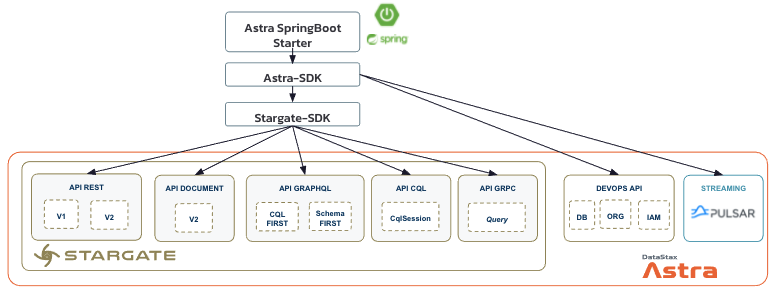
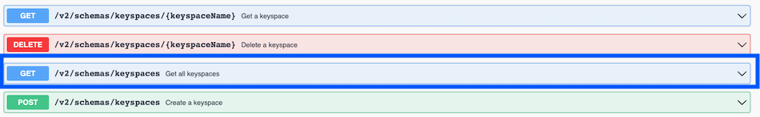

• Java
1. Overview¶

The Astra platform provides multiple services such as; Databases and Streaming. For each service there are multiple Apis and interfaces available. In this page we will explain how to use each interface with JAVA. For each interface we list minimal dependencies and show you the minimal code.
Pick the interface in the table below to get relevant instructions. In most cases, you will download a working sample. There are standalone examples designed to be as simple as possible. Please note that a Software developement KIT (SDK) is also available for you to reduce the amount of boilerplate code needed to get started. More information is here.
2. Interfaces list¶
Pick the interface you want to use from the list:
| Component | Interface | Description |
|---|---|---|
| Astra DB | Cassandra Native Drivers | Use Cassandra with java native drivers and CQL language. |
| Astra DB | Rest | CQL operations exposed as stateless rest resources. You will interact with this interface through an HttpClient. |
| Astra DB | Document | Use Cassandra as a Document-Oriented database. You will interact with this interface through an HttpClient. |
| Astra DB | GraphQL | CQL operations exposed as a GraqphQL interface. Each query and mutation definitions are generated from the table schema. You will interact with this interface through an HttpClient or GraphQL client like DGS. |
| Astra DB | gRPC | CQL operations exposed as a gRPC API. You will interact with this interface through a grpc Client generated from the specification proto files |
| Astra Streaming | Pulsar Client | Create Producer, Consumers, Subscriptions.. |
| Astra Streaming | Pulsar Admin | Administrate your Pulsar cluster |
| Astra Core | Devops Apis | Administration operations for the platform exposed as stateless HTTP Apis. You will interact with this interface through an HttpClient. |
3. CQL Cassandra Drivers¶
Driver reference documentation can be found HERE, this page is focused on connectivity with Astra DB only.
Prerequisites
Astra
- You should have an Astra account
- You should Create an Astra Database
- You should Have an Astra Token
- You should Download your Secure bundle
Development environment
- You should install Java Development Kit (JDK) 8: Use the reference documentation to install a Java Development Kit, Validate your installation with
- You should install Apache Maven: Use the reference documentation and validate your installation with
3.1 Drivers 4.x¶
Version 4.x is recommended
Version 4 is major redesign of the internal architecture. As such, it is not binary compatible with previous versions. However, most of the concepts remain unchanged, and the new API will look very familiar to 2.x and 3.x users.
Setup pom.xml
-
Any version
4.xshould be compatible with Astra. -
Update your
pom.xmlfile with the latest version of the 4.x libraries:
<!-- (REQUIRED) -->
<dependency>
<groupId>com.datastax.oss</groupId>
<artifactId>java-driver-core</artifactId>
<version>${latest4x}</version>
</dependency>
<!-- OPTIONAL -->
<dependency>
<groupId>com.datastax.oss</groupId>
<artifactId>java-driver-query-builder</artifactId>
<version>${latest4x}</version>
</dependency>
<dependency>
<groupId>com.datastax.oss</groupId>
<artifactId>java-driver-mapper-runtime</artifactId>
<version>${latest4x}</version>
</dependency>
Sample Code
import java.nio.file.Paths;
import org.slf4j.Logger;
import org.slf4j.LoggerFactory;
import com.datastax.oss.driver.api.core.CqlSession;
public class AstraDriver4x {
static final String ASTRA_ZIP_FILE = "<path_to_secureConnectBundle.zip>";
static final String ASTRA_USERNAME = "<provide_a_clientId>";
static final String ASTRA_PASSWORD = "<provide_a_clientSecret>";
static final String ASTRA_KEYSPACE = "<provide_your_keyspace>";
public static void main(String[] args) {
Logger logger = LoggerFactory.getLogger(AstraDriver4x.class);
try (CqlSession cqlSession = CqlSession.builder()
.withCloudSecureConnectBundle(Paths.get(ASTRA_ZIP_FILE))
.withAuthCredentials(ASTRA_USERNAME, ASTRA_PASSWORD)
.withKeyspace(ASTRA_KEYSPACE)
.build()) {
logger.info("[OK] Welcome to ASTRA. Connected to Keyspace {}", cqlSession.getKeyspace().get());
}
logger.info("[OK] Success");
System.exit(0);
}
}
Extra Resources
- To learn more about the history of the 4.x Java driver, check out this blogpost.
- If you are still using
3.xand want to migrate you can have a look the upgrade guide but you can also keep using3.xas described below - Multiple Standalone Classes using driver 4.x
- Spring PetClinic in Reactive and especially the mapper
3.2 Drivers 3.x¶
- Please note that version 3.8+ is required to connect to Astra.
Setup pom.xml
- Update your
pom.xmlfile with the latest version of the 3.x libraries:
Sample Code
import java.io.File;
import org.slf4j.Logger;
import org.slf4j.LoggerFactory;
import com.datastax.driver.core.Cluster;
import com.datastax.driver.core.Session;
public class AstraDriver3x {
// Define inputs
static final String ASTRA_ZIP_FILE = "<path_to_secureConnectBundle.zip>";
static final String ASTRA_USERNAME = "<provide_a_clientId>";
static final String ASTRA_PASSWORD = "<provide_a_clientSecret>";
static final String ASTRA_KEYSPACE = "<provide_your_keyspace>";
public static void main(String[] args) {
Logger logger = LoggerFactory.getLogger(AstraDriver3x.class);
try(Cluster cluster = Cluster.builder()
.withCloudSecureConnectBundle(new File(ASTRA_ZIP_FILE))
.withCredentials(ASTRA_USERNAME, ASTRA_PASSWORD)
.build() ) {
Session session = cluster.connect(ASTRA_KEYSPACE);
logger.info("[OK] Welcome to ASTRA. Connected to Keyspace {}", session.getLoggedKeyspace());
}
logger.info("[OK] Success");
System.exit(0);
}
}
Extra Resources for Cassandra Drivers 3.x
3.3 Astra SDK¶
This SDK (Software Development Kit) makes it easy to call Stargate and/or Astra services using idiomatic Java APIs.

The Astra SDK sets up the connection to work with the AstraDB cloud-based service. You will work with the class AstraClient (which configures the StargateClient for you). As you can see on the figure below the AstraClient handles not only Stargate Apis but also the Astra Devops Api and Apache Pulsar. Reference documentation.
Setup pom.xml
- Update your
pom.xmlfile with the latest version of the SDK

Sample Code
// Init Astra Client
AstraClient cli = AstraClient.builder()
.withToken(ASTRA_DB_TOKEN)
.withDatabaseId(ASTRA_DB_ID)
.withDatabaseRegion(ASTRA_DB_REGION)
.withCqlKeyspace(ASTRA_DB_KEYSPACE)
.enableCql()
.build();
// Using Cassandra Interface
CqlSession cqlSession = astraClient.cqlSession();
String cqlVersion = cqlSession
.execute("SELECT cql_version from system.local")
.one().getString("cql_version"));
Extra Resources
- To get the full fledged information regarding the SDK check the github repository
4. Stargate REST Api¶
ℹ️ Overview
Stargate is a data gateway (Proxy) on top of Apache Cassandra which exposes new interfaces to simplify application integration. It is a way to create stateless components and ease the integration with 4 different HTTP Apis (rest, doc, graphQL, gRPC). In this chapter we will cover integration with REST Apis also called DATA in the swagger specifications.
To know more regarding this interface specially you can have a look to dedicated section of the wiki or reference Stargate Rest Api Quick Start Guide.
⚠️ We recommend to use version
V2(with V2 in the URL) as it covers more features and the V1 would be deprecated sooner.

📦 Prerequisites [ASTRA]
- You should have an Astra account
- You should Create an Astra Database
- You should Have an Astra Token
📦 Prerequisites [Development Environment]
-
You should install Java Development Kit (JDK) 8: Use the reference documentation to install a Java Development Kit.
-
You should install Apache Maven: Use the reference documentation and validate your installation with
📦 Setup Project
-
You simply need an
HTTP Clientto use the Rest API. There are a lot of clients in the Java languages like HttpURLConnection, HttpClient introduced in Java 11, Apache HTTPClient, OkHttpClient, Jetty HttpClient. A comparison is provided is this blogpost to make your choice. In this tutorial, we will use theApache HttpClient, which is included in the SDK. You should adapt the code depending on the framework you have chosen. -
Import relevant dependencies for
Apache Http Clientin yourpom.xml
<dependency>
<groupId>org.apache.httpcomponents.client5</groupId>
<artifactId>httpclient5</artifactId>
<version>5.1.3</version>
</dependency>
🖥️ Sample Code (project astra-httpclient-restapi)
public class AstraRestApiHttpClient {
static final String ASTRA_TOKEN = "<change_with_your_token>";
static final String ASTRA_DB_ID = "<change_with_your_database_identifier>";
static final String ASTRA_DB_REGION = "<change_with_your_database_region>";
static final String ASTRA_DB_KEYSPACE = "<change_with_your_keyspace>";
static Logger logger = LoggerFactory.getLogger(AstraRestApiHttpClient.class);
public static void main(String[] args) throws Exception {
String apiRestEndpoint = new StringBuilder("https://")
.append(ASTRA_DB_ID).append("-")
.append(ASTRA_DB_REGION)
.append(".apps.astra.datastax.com/api/rest")
.toString();
logger.info("Rest Endpoint is {}", apiRestEndpoint);
try (CloseableHttpClient httpClient = HttpClients.createDefault()) {
listKeyspaces(httpClient, apiRestEndpoint);
createTable(httpClient, apiRestEndpoint);
insertRow(httpClient, apiRestEndpoint);
retrieveRow(httpClient, apiRestEndpoint);
}
logger.info("[OK] Success");
System.exit(0);
}
- List keyspaces

private static void listKeyspaces(CloseableHttpClient httpClient, String apiRestEndpoint)
throws Exception {
// Build Request
HttpGet listKeyspacesReq = new HttpGet(apiRestEndpoint + "/v2/schemas/keyspaces");
listKeyspacesReq.addHeader("X-Cassandra-Token", ASTRA_TOKEN);
// Execute Request
try(CloseableHttpResponse res = httpClient.execute(listKeyspacesReq)) {
if (200 == res.getCode()) {
logger.info("[OK] Keyspaces list retrieved");
logger.info("Returned message: {}", EntityUtils.toString(res.getEntity()));
}
}
}
- Create a Table

Query used is
createTableJsonhere:
{
"name": "users",
"columnDefinitions": [
{
"name": "firstname",
"typeDefinition": "text"
},
{
"name": "lastname",
"typeDefinition": "text"
},
{
"name": "email",
"typeDefinition": "text"
},
{
"name": "color",
"typeDefinition": "text"
}
],
"primaryKey": {
"partitionKey": ["firstname"],
"clusteringKey": ["lastname"]
},
"tableOptions": {
"defaultTimeToLive": 0,
"clusteringExpression": [{ "column": "lastname", "order": "ASC" }]
}
}
Create Table code
private static void createTable(CloseableHttpClient httpClient, String apiRestEndpoint)
throws Exception {
HttpPost createTableReq = new HttpPost(apiRestEndpoint
+ "/v2/schemas/keyspaces/" + ASTRA_DB_KEYSPACE + "/tables");
createTableReq.addHeader("X-Cassandra-Token", ASTRA_TOKEN);
String createTableJson = "{...JSON.....}";
createTableReq.setEntity(new StringEntity(createTableJson, ContentType.APPLICATION_JSON));
// Execute Request
try(CloseableHttpResponse res = httpClient.execute(createTableReq)) {
if (201 == res.getCode()) {
logger.info("[OK] Table Created (if needed)");
logger.info("Returned message: {}", EntityUtils.toString(res.getEntity()));
}
}
}
- Insert a Row

private static void insertRow(CloseableHttpClient httpClient, String apiRestEndpoint)
throws Exception {
HttpPost insertCedrick = new HttpPost(apiRestEndpoint + "/v2/keyspaces/"
+ ASTRA_DB_KEYSPACE + "/users" );
insertCedrick.addHeader("X-Cassandra-Token", ASTRA_TOKEN);
insertCedrick.setEntity(new StringEntity("{"
+ " \"firstname\": \"Cedrick\","
+ " \"lastname\" : \"Lunven\","
+ " \"email\" : \"c.lunven@gmail.com\","
+ " \"color\" : \"blue\" }", ContentType.APPLICATION_JSON));
// Execute Request
try(CloseableHttpResponse res = httpClient.execute(insertCedrick)) {
if (201 == res.getCode()) {
logger.info("[OK] Row inserted");
logger.info("Returned message: {}", EntityUtils.toString(res.getEntity()));
}
}
}
- Retrieve a row

private static void retrieveRow(CloseableHttpClient httpClient, String apiRestEndpoint)
throws Exception {
// Build Request
HttpGet rowReq = new HttpGet(apiRestEndpoint + "/v2/keyspaces/"
+ ASTRA_DB_KEYSPACE + "/users/Cedrick/Lunven" );
rowReq.addHeader("X-Cassandra-Token", ASTRA_TOKEN);
// Execute Request
try(CloseableHttpResponse res = httpClient.execute(rowReq)) {
if (200 == res.getCode()) {
String payload = EntityUtils.toString(res.getEntity());
logger.info("[OK] Row retrieved");
logger.info("Row retrieved : {}", payload);
}
}
}

5. Stargate Document Api¶
ℹ️ Overview
The Document API is an HTTP REST API and part of the open source Stargate.io. The idea is to provide an abstraction on top of Apache Cassandra™ to allow document-oriented access patterns. To get familiar with it you can access documentation and sandbox here
5.1 Http Client¶
-
📦 Prerequisites
-
You should have an Astra account
- You should Create an Astra Database
- You should Have an Astra Token
- You should install Java Development Kit (JDK) 8: Use the reference documentation to install a Java Development Kit.
- You should install Apache Maven: Use the reference documentation and validate your installation with
- 📦 Setup Project
Import relevant dependencies for Apache Http Client in your pom.xml.
Jackon is also helpful to serialize or unserialized Java Objects as JSON.
<dependency>
<groupId>org.apache.httpcomponents.client5</groupId>
<artifactId>httpclient5</artifactId>
<version>5.1.3</version>
</dependency>
static final String ASTRA_TOKEN = "change_me";
static final String ASTRA_DB_ID = "change_me";
static final String ASTRA_DB_REGION = "change_me";
static final String ASTRA_DB_KEYSPACE = "change_me";
static Logger logger = LoggerFactory.getLogger(AstraDocApiHttpClient.class);
public static void main(String[] args) throws Exception {
try (CloseableHttpClient httpClient = HttpClients.createDefault()) {
// Build Request
String apiRestEndpoint = new StringBuilder("https://")
.append(ASTRA_DB_ID).append("-")
.append(ASTRA_DB_REGION)
.append(".apps.astra.datastax.com/api/rest")
.toString();
HttpGet req = new HttpGet(apiRestEndpoint + "/v2/schemas/namespaces");
req.addHeader("X-Cassandra-Token", ASTRA_TOKEN);
// Execute Request
try(CloseableHttpResponse res = httpClient.execute(req)) {
if (200 == res.getCode()) {
logger.info("[OK] Namespaces list retrieved");
logger.info("Returned message: {}", EntityUtils.toString(res.getEntity()));
}
}
}
}
5.2 Astra SDK¶
-
📦 Prerequisites
-
You should have an Astra account
- You should Create an Astra Database
- You should Have an Astra Token
- You should install Java Development Kit (JDK) 8: Use the reference documentation to install a Java Development Kit.
- You should install Apache Maven: Use the reference documentation and validate your installation with
- 📦 Setup Project
Import relevant dependencies for Astra SDK in your pom.xml.
<dependency>
<groupId>com.datastax.astra</groupId>
<artifactId>astra-sdk</artifactId>
<version>0.3.0</version>
</dependency>
public static final String ASTRA_DB_TOKEN = "CHANGE_ME";
public static final String ASTRA_DB_ID = "CHANGE_ME";
public static final String ASTRA_DB_REGION = "CHANGE_ME";
public static void main(String[] args) {
try (AstraClient astraClient = AstraClient.builder()
.withToken(ASTRA_DB_TOKEN)
.withDatabaseId(ASTRA_DB_ID)
.withDatabaseRegion(ASTRA_DB_REGION)
.build()) {
System.out.println("+ Namespaces (doc) : " +
astraClient
.apiStargateDocument()
.namespaceNames()
.collect(Collectors.toList()));
}
}
6 Stargate GraphQL¶
6.1 CQL First¶
ℹ️ Overview
📦 Prerequisites [ASTRA]
📦 Prerequisites [Development Environment]
📦 Setup Project
🖥️ Sample Code
6.2 GraphQL First¶
ℹ️ Overview
📦 Prerequisites [ASTRA]
📦 Prerequisites [Development Environment]
📦 Setup Project
🖥️ Sample Code
7. Stargate gRPC¶
7.1 Stargate Client¶
ℹ️ Overview
📦 Prerequisites [ASTRA]
📦 Prerequisites [Development Environment]
📦 Setup Project
🖥️ Sample Code
7.2 Astra SDK¶
ℹ️ Overview
📦 Prerequisites [ASTRA]
📦 Prerequisites [Development Environment]
📦 Setup Project
🖥️ Sample Code
8. Pulsar Client¶
8.1 Pulsar Client¶
ℹ️ Overview
📦 Prerequisites [ASTRA]
📦 Prerequisites [Development Environment]
📦 Setup Project
🖥️ Sample Code
8.2 Astra SDK¶
ℹ️ Overview
📦 Prerequisites [ASTRA]
📦 Prerequisites [Development Environment]
📦 Setup Project
🖥️ Sample Code